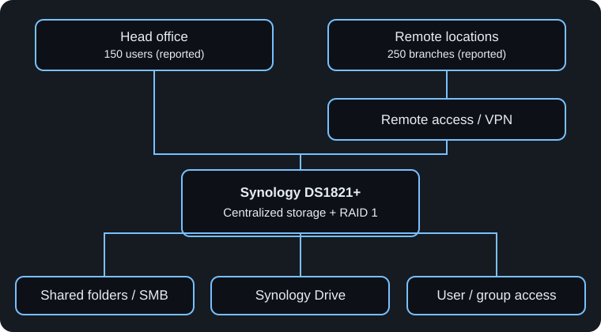

01 / Storage infrastructure
Centralized NAS.
Centralized file access, directory permissions and remote connectivity with Synology DS1821+.
Overview
Designed and supported a centralized network-attached storage environment to make shared files easier to manage and access. Directory permissions help align access with team responsibilities, while remote connectivity supports authorized users beyond the office.
Areas of work
- Centralized storage and shared folder organization
- Permission management for user groups
- Remote access and connectivity support
- Ongoing administration and user assistance
